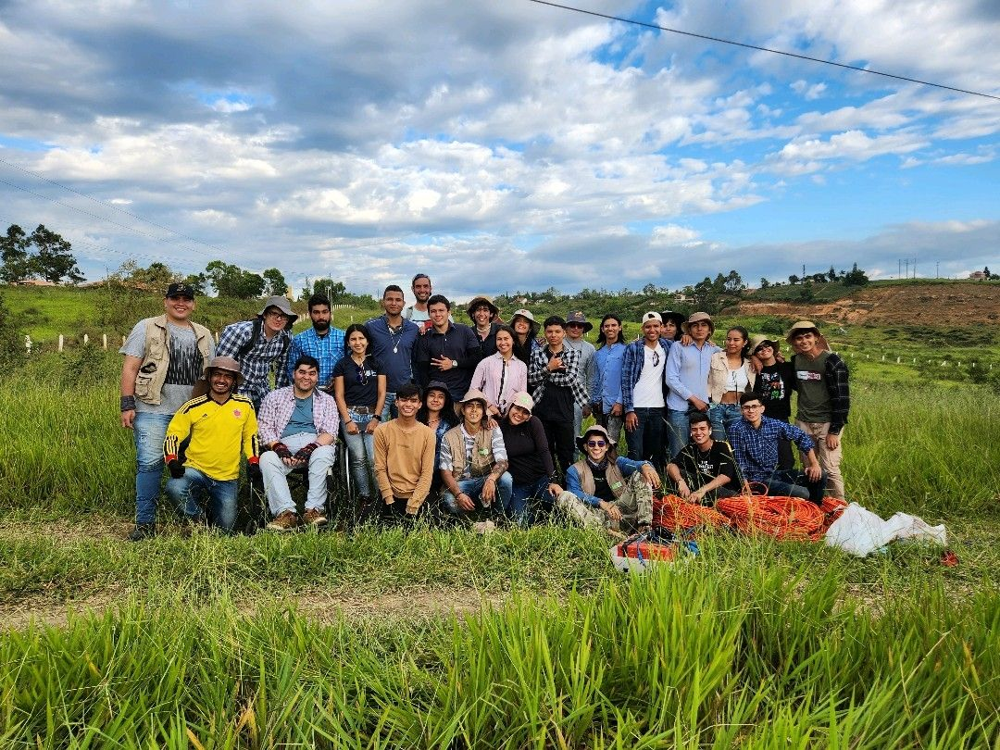

Geoblog de Camilo
Todo sobre geología
Geoblog de Camilo
Todo sobre geología
¿Qué es la Geología?
Geología
Introducción
La geología es la ciencia que estudia la Tierra, sus materiales, la estructura interna y los procesos que han dado forma al planeta a lo largo del tiempo. Es una disciplina multidisciplinaria que combina la física, la química, la biología y otras ciencias para comprender la historia de nuestro planeta.
Tipos de rocas
- Rocas ígneas: se forman a partir del enfriamiento y solidificación del magma.
- Rocas sedimentarias: se forman por la acumulación y cementación de sedimentos.
- Rocas metamórficas: se forman a partir de la transformación de rocas preexistentes debido a la presión y temperatura elevadas.
Procesos geológicos
- Erosión: desgaste y transporte de materiales en la superficie terrestre.
- Sedimentación: deposición de sedimentos transportados por el agua, el viento o el hielo.
- Metamorfismo: transformación de rocas debido a cambios en la presión y temperatura.
- Tectónica de placas: movimiento y deformación de las placas litosféricas que forman la corteza terrestre.
- Vulcanismo: actividad volcánica que ocurre cuando el magma asciende a la superficie.
Grandes eventos geológicos
Algunos ejemplos de eventos geológicos importantes incluyen la formación de las cordilleras, la apertura y cierre de los océanos, las erupciones volcánicas y los terremotos.
Conclusiones
La geología es fundamental para comprender la historia y los procesos que han dado forma a nuestro planeta. Estudiar la Tierra nos ayuda a comprender los recursos naturales, los riesgos geológicos y el impacto de las actividades humanas en el medio ambiente.
Hecho por Camilo Mejía

Sujeto a modificaciones